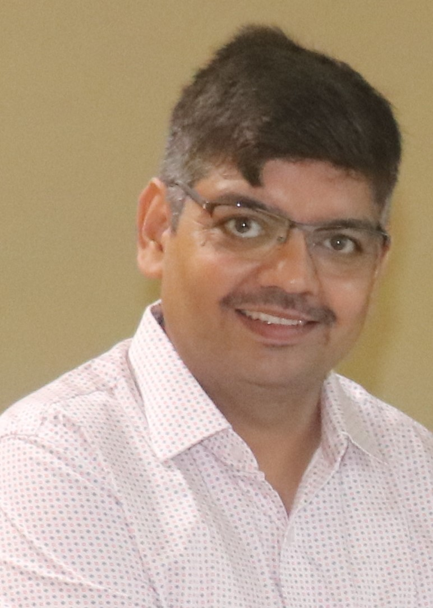

|  | Krishna Pratap Singh Associate Professor; |
I am working as an Associate Professor, Department of Information Technology, IIIT Allahabad, and heading Machine Learning and Optimization Lab. Previously, I worked as an Assistant Professor (2013-2018) and Lecturer (2009-2012) at IIIT Allahabad. I received MSc in Industrial Mathematics & Informatics (2004) and PhD in Optimization (2009) from IIT Roorkee. I am also a memeber of Sakura Science Club, Japan, Senior member IEEE and ACM Member. Currently my group is working on Transfer learning for low resources data and also to develop model in Federeted learning setting. Also, my group is working on Markup language problem and text to image creation.